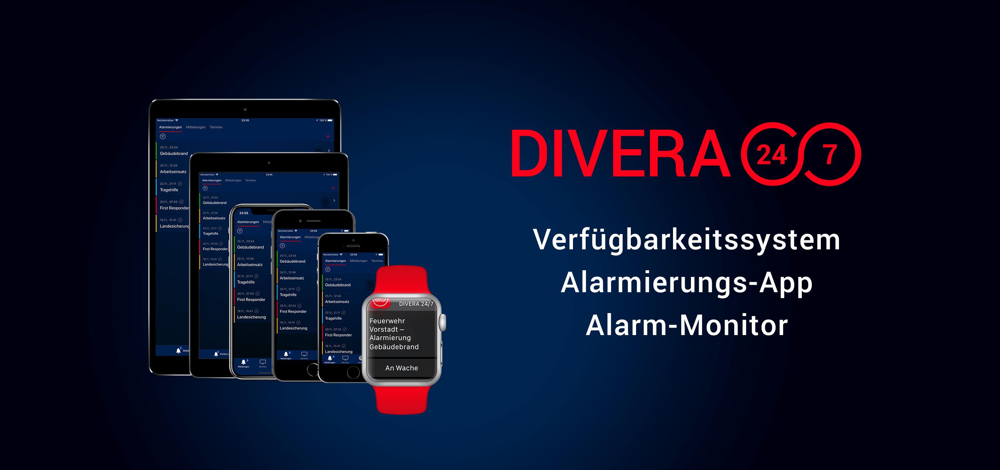

🔈 Divera 24/7
Unser Server kann die Einsatz Alarmierung mit Einsatzart, Einsatzstichwort und Einsatzort auch an die Alarmierungs-App Divera 24/7 übergeben.
Die App bietet die Möglichkeit die Einsatzkräfte und deren Status zu verwalten. Für jeden Einsatz kann eine Rückmeldung gegeben werden, so dass auf dem Einsatz Monitor eine Personalverfügbarkeit ersichtlich wird.
Wenn auch eure Feuerwehr Divera 24/7 nutzen möchte und über die Leitstelle Lausitz (Cottbus) alarmiert wird, so können wir euch gern technisch anbinden. Auch diesen Service bieten wir euch kostenfrei an.
Bei Interesse kontaktiert uns gern:
👉 E-Mail senden
- Einsatz Alarmierung Pushmitteilung und Sound
- Personalverfügbarkeit via Status
- Rückmeldefunktion pro Einsatz
